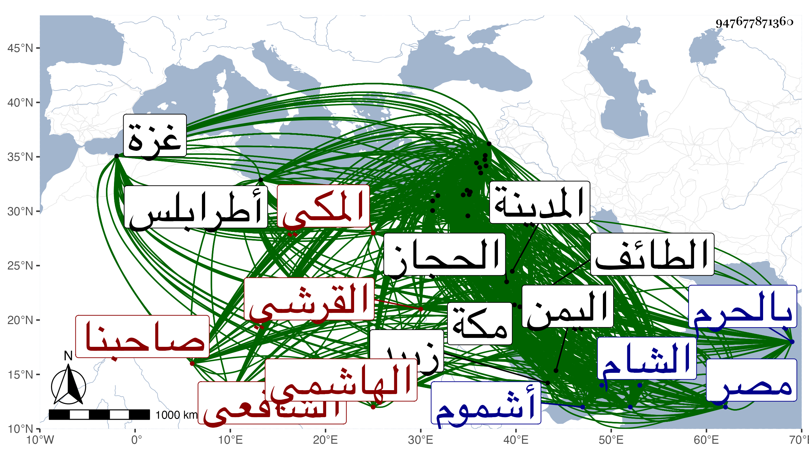

0902Sakhawi.DawLamic.ITO20230111-ara1.EIS1600.947677871360
Biography ID: 947677871360
409
عمر بن محمد بن محمد بن أبي الخير محمد بن محمد بن عبد الله بن فهد صاحبنا بل مفيدنا شيخ الجماعة النجم والسراج أبو القسم ويسمى محمدا لكنه بعمر أشهر ابن شيخنا التقي القرشي الهاشمي المكي الشافعي والد عبد العزيز ويحيى ويعرف كسلفه بابن فهد . ولد في ليلة الجمعة سلخ جمادى الثانية سنة اثنتي عشرة وثمانمائة ونشأ بها فحفظ القرآن ثم كتابا في الحديث ألفه له والده ثم حفظ إلى أثناءالفرائض من الخرقى على مذهب أحمد ثم حوله أبوه شافعيا وحفظ النصف الأول من المنهاج ونحو ثلثي ألفية ابن ملك ونصف ألفية العراقي وبكر به أبوه فأحضره وأسمعه الكثير بمكة على مشايخها والقادمين إليها فكان ممن أحضره عليه الزين أبو بكر المراغي والزين عبد الرحمن الزرندي والجمال بن ظهيرة وأقرباؤه الكمال أبو الفضل محمد بن أحمد وأبو البركات وظهيرة بن حسين وفتح الدين محمد بن محمد بن محمد المخزومي والزين محمد بن أحمد الطبري وعبد الله بن صلح الشيباني والشمس بن المحب المقدسي وممن أسمعه عليه بها الولي العراقي وابن سلامة والعز محمد بن علي القدسي وعبد الرحمن بن طولوبغا والشمس الشامي وابن الجزري والنجم بن حجي والجمال محمد بن حسين الكازروني والشريف أبو عبد الله الفاسي وطاهر الخجندي واستجاز له خلقا من أماكن شتى فمن المدينة رقية ابنة يحيى بن مزروع ومن الشام عائشة ابنة محمد بن عبد الهادي والشهاب بن حجي والشهاب الحسباني والجمال بن الشرايحي وعبد القادر الأرموي ومن بيت المقدس البرهان بن أبي محمود وأخته فاطمة والبدر حسن بن موسى والشهاب بن الهائم ومن الخليل أحمد بن حسين النصيبي وأحمد بن موسى الحبراوي ومن القاهرة الشرف ابن الكويك والعز بن جماعة والجلال البلقيني والجمال الحنبلي والشمس البلالي ومن إسكندرية البدر بن الدماميني والتاج بن التنسي والكمال بن خير ومن حلب العز الحاضري ومن حمص الشمس محمد بن محمد بن أحمد السبكي ومن حماه البدر محمود ابن خطيب الدهشة ومن بعلبك التاج بن بردس والشمس بن اليونانية ومن زبيد المجد اللغوي والنفيس العلوي والموفق علي ابن أحمد الخزرجي وأحمد بن علي بن شداد ومن تعز الجمال بن الخياط في آخرين من هذه الأماكن وغيرها ، وأقبل على الطلب بنفسه وتخرج بوالده وغيره وقرأ ببلده قليلا ، ثم رحل إلى القاهرة في موسم سنة خمس وثلاثين صحبة الركب المصري فدخل المدينة النبوية وأقام بها ثلاثة أيام ولم يسمع بها شيئا وكان دخوله القاهرة في رابع عشري المحرم من التي تليها فسمع بها على الواسطي والبدر حسين البوصيري وآخرين ، ولازم شيخنا حتى أخذ عنه جملة وتدرب به وكذا بمستمليه الزين أبي النعيم العقبي أيضا وسافر منها إلى الشام في رمضانها فسمع بغزة من الشمس مملوك الأياسي وبالخليل من الشمس التدمري وبالقدس من الزين القبابي وبالرملة من ابن رسلان وبالشام من عائشة ابنة ابن الشرايحي ، وانتفع بالحافظ ابن ناصر الدين وحمل عنه أشياء ، وسافر معه من بلده إلى حلب وكان من جملة ما وصفه به : السيد الشريف الحسيب النسيب الشيخ العالم الفاضل البارع المحدث المفيد الرحالة سليل العلماء الأماثل فخر الفضلاء الأفاضل جمال العترة الهاشمية تاج السلالة العلوية نجم الدين ضياء المحدثين الهاشمي العلوي ، ووالده بالشيخ الإمام العلامة الحافظ تقي الدين مفيد المحدثين فسمع في توجهه إليها ببعلبك من العلاء بن بردس وبطرابلس من الشمس محمد بن عمر النيني الفامي وبحلب من حافظها البرهان ولتقيده بمرافقة شيخه ابن ناصر الدين لم يبلغ غرضه من البرهان لرجوعه معه سريعا ، وسمع في رجوعه بحماة من التقي بن حجة وبغيرها من البلاد وفارق ابن ناصر الدين واستمر راجعا إلى القاهرة فوصلها بعد دخوله القدس والخليل أيضا ولم يلبث أن رجع إلى البلاد الشامية لكونه لم يشف غرضه من البرهان فلقي شيخنا بدمشق وهو راجع صحبة الركاب السلطاني فسمع عليه بل ومعه أيضا على بعض المسندين وكذا سمع في توجهه بقارة وحمص وحماة ووصل حلب في أواخرها فأنزله البرهان بيت ولده أبي ذر بالشرفية واستمر إلى أواخر صفر من التي تليها وانتفع به وأخذ عنه في هذه المرة شيئا كثيرا جدا ، وسمع في رجوعه منها أيضا بحماة وحمص وطرابلس وبعلبك وغزة ثم ارتحل من القاهرة إلى إسكندرية فسمع في طريقه إليها بمدينة أشموم الرمان وثغر دمياط وبالمنصورة وسمنود والمحلة الكبرى والنحرارية ودسوق وفوة ودمنهور الوحش ، وما تيسر له دخول إسكندرية لتنافس حصل بينه وبين رفيقه ثم رجع إلى بلاده صحبة الحاج في موسم سنة ثمان وثلاثين وقد تحمل شيئا كثيرا بهذه البلاد وبغيرها عن خلق كثيرين وتزايدت فوائده فأقام بها إلى أن ارتحل منها إلى القاهرة أيضا عودا على بدء فوصلها في أواخر جمادى الآخرة سنة خمسين فقرأ بها على شيخنا لسان الميزان وأشياء وسمع عليه وعلى غيره من بقايا المسندين ورافقته حينئذ في جميع ذلك ، ثم عاد إلى بلده صحبة الحاج منها وسمع في توجهه بعقبة أيلة على الكمال بن البارزي وأصيل الخضري وكتب الكثير بخطه من المطولات وغيرها وعرف العالي والنازل وقمش في طول هذه المدة بل وبعدها أيضا عمن دب ودرج وأخذ عمن هو مثله بل وممن دونه ممن هو في عداد من يأخذ عنه ولم يتحاش عن ذلك كله حتى أنه سمع مني بمكة جملة من تصانيفي وحضر عندي ما أمليته بها وسلك في صنيعه هذا مسلك الحفاظ الأئمة وصار كثير المسموع والمروي والشيوخ وخرج لنفسه ولأبيه المعجم والفهرست وكذا خرج لأبي الفتح ثم أبي الفرج المراغيين ولوالدهما ولابن أختهما المحب المطري ولبلديهم النور المحلي سبط الزبير ولزينب ابنة اليافعي وعمل لها العشاريات وللعز بن الفرات ولسارة ابنة ابن جماعة حتى أنه خرج لأصحابه فمن دونهم ، وعمل لنفسه المسلسلات وانتقى وحرر الأسانيد وترجم الشيوخ ومهر في هذا النوع واستمد الجماعة قديما وحديثا من فوائده وعولوا على اعتماده وذيل على تاريخ بلده للتقي الفاسي وعمل الألقاب وتراجم شيوخ شيوخه وجمع تراجم ست بيوت من بيوت مكة وأفرد كل بيت منها في تصنيف لكنه أكثر فيه من ذكر المهملين والأبناء ممن لم يعش إلا أشهرا ونحو ذلك مما لا فائدة فيه وهم الفهديون واستطرد فيه إلى من تسمى بفهد أو نسبه فهد ولو لم يكن من بيتهم مع فصله لهؤلاء عنهم وسماه بذل الجهد فيمن سمي بفهد وابن فهد والطبريون وسماه التبيين للطبريين والظهيريون وسماه المشارق المنيرة في ذكر بني ظهيرة والفاسيون وسماه تذكرة الناسي بأولاد أبي عبد الله الفاسي والنويريون وسماه بأولاد أحمد النويري يعني به أحمد بن عبد الرحمن بن القسم بن عبد الرحمن والقسطلانيون وسمي غاية الأماني في تراجم أولاد القسطلاني إلى غير ذلك مما أكثره في المسودات ووقفت على أكثره كالمعجم لمن كتب عنه من الشعراء ورتب أسماء تراجم الحلية والمدارك وتاريخ الأطباء وطبقات الحنابلة لابن رجب والحفاظ للذهبي والذيول عليه على حروف المعجم حيث يعين محل ذاك الاسم من الأجزاء والطبقة ليسهل كشفه ومراجعته وهو من أهم شيء عمله وأفيده ، كل ذلك مع صدق اللهجة ومزيد النصح وعظيم المروءة وعلى الهمة وطرح التكلف والعفة والشهامة والأعراض عن بني الدنيا وعدم مزاحمة الرؤساء ونحوهم وكونه في التواضع والفتوة وبذل نفسه وفوائده وكتبه وإكرامه للغرباء والوافدين بالمحل الأعلى ، ومحاسنه جمة ولم يعدم مع كثرتها من يؤذيه حتى من أفنى عمره في صحبته وعادى جمعا بمزيد محبته ولكنه اعتذر واستغفر وعد ذلك من التقصير الذي لا ينفصل عنه الكثير من صغير وكبير ولو أعرض عن الطائفتين بالكلية وجمع نفسه على التصنيف والإفادة والتحديث لاستفاد وأفاد ولكنه كثير الهضم لنفسه ، وقد عرض عليه شيخنا في سنة خمسين الإقامة عنده ليرشده لبعض التصانيف فما وافق وكان رحمه الله كثير الميل إليه والإقبال عليه وأثنى عليه كما نقلته في الجواهر ومما كتبه إليه : وقد كثر شوقنا إلى مجالستكم وتشوقنا إلى متجدداتكم ويسرنا ما يبلغنا من إقبالكم على هذا الفن الذي باد جماله وحاد عن السنن المعتبر عماله :
| وقد كنا نعدهم قليلا | فقد صاروا أقل من القليل |
فلله الأمر ، إلى أن قال : ويعرفني الولد بأحوال اليمن ومكة ووفيات من انتقل بالوفاة من نبهاء البلدين وتقييد ذلك حسب الطاقة ولا سيما منذ قطع الحافظ تقي الدين تقييداته وإن تيسر للولد الحضور في هذه السنة إلى القاهرة فليصحب معه جميع ما تجدد له من تخريج أو تجميع ليستفاد انتهى . ولما قدم رأيته استعار منه أسماء شيوخه ورأيته ينتقي منها بل ونقل عنه في ترجمة رتن من كتاب الإصابة فقال : وجدت بخط عمر بن محمد الهاشمي وذكر شيئا وكفى بهذا مدحة لكل منهما ووصفه بقوله مرة من أهل البيت النبوي نسبا وعلما وأنه جد واجتهد في تحصيل الأنواع الحديثية النبوية وأخرى بأنه محدث كبير شريف من أهل البيت النبوي وأخرى أنه من أهل العلم بالحديث ورجاله ومن أهل البيت النبوي إلى غيرها مما بينته في الجواهر والدرر ولو علم منه تلفته للأوصاف والثناء لما تخلف عن وصفه بالحافظ الذي وصف به ما لم ينهض لمجموع ما تقدم ممن يسعى ويتوسل ويعادي ولا يسلم في وصفه لهم بذلك من إنكار والأعمال كلها بالنيات ، وكذا رأيت التقي المقريزي روى عنه في كراسة له في فضل البيت فقال : وكتب إلى المحدث الفاضل أبو حفص بن عمر الهاشمي وشافهني به غير مرة فذكر شيئا بل وصفه في ترجمة فتح الدين محمد بن عبد الرحمن بن محمد بن صالح المدني قاضيها من عقوده بصاحبنا وقال في ترجمة أبيه منه أنهما محدثا الحجاز كثيرا الاستحضار وأرجو أن يبلغ عمر في هذا العلم مبلغا عظيما لذكائه واعتنائه بالجمع والسماع والقراءة بارك الله له فيما آتاه وساق في عقوده في ترجمة أبيه نسبه إلى علي بن أبي طالب رضي الله عنه ، وذكره ابن أبي عذيبة في ترجمة والده فقال : الحافظ نجم الدين من أعيان فضلاء تلك البلاد وإليه المرجع في هذا الفن وهو ممن كتب عنه أيضا واغتبط به حفاظ شيوخه كابن ناصر الدين ، وسافر معه من بلده إلى حلب والبرهان الحلبي وأنزله في بيت ولده كما قدمته عنهما وقال ثانيهما كما قرأته بخطه أنه قرأ علي شيئا كثيرا جدا واستفاد وكتب الطباق والأجزاء ودأب في طلب الحديث ، وقراءته سريعة وكذا كتابته غير أنه لا يعرف النحو رده الله إلى وطنه مكة سالما ، وقال الزين رضوان فيما قرأته بخطه أيضا في بعض مجاميعه أنه نشأ في سماع الحديث بمكة على مشايخها والقادمين إليها من البلاد ثم رحل إلى الديار المصرية فأكثر بها من العوالي وغيرها ثم رحل إلى القدس والخليل وأخذ عن الموجودين بهما إلى دمشق فأخذ عمن لقيه بها وكان قد كتب كثيرا عن حافظ العصر والموجودين بمصر وبلغني أنه كتب كذلك بالشام وغيرها فالله تعالى ينفعه وإيانا وجميع المسلمين بل وأسمع الزين المذكور عليه ولده بعض الأحاديث في رحلته الأولى كما أورده في مسودة المتباينات للولد ولخص تراجم أكثر شيوخ رحلته وكذا صنع التقي القلقشندي في بعض التراجم ، وممن انتفع به وبمرافقته القطب الخيضري وغيره كالبقاعي وما سلم من أذاه بعد مناكدته التي امتنع صاحب الترجمة من أجلها لدخول إسكندرية رغبة في عدم مرافقته بحيث نتف من لحيته شعرات واستمر البقاعي مع إظهار الصلح حاقدا وبالخفية مناكدا على جاري عوائده حتى مع كبار شيوخه وأما أنا فاستفدت منه كثيرا وسمعت منه في سنة خمسين وبعدها أشياء بل قرأت عليه في الطائف ومكة أشياء وكذا سمع عليه غير واحد من أهل بلده والقادمين إليها ، وحدث بالكتب الكبار وقرأ عليه التقي الجراعي أحد أئمة الحنابلة في مجاورته مسند الإمام أحمد وعمل القاري يوم الختم قصيدة نظم فيها مسند المسمع وامتدحه فيها بل امتدحه أيضا غير واحد ، وبيننا من المودة والإخاء ما لا أصفه وله رغبة تامة في تحصيل كل ما يصدر عني من تأليف وتخريج ونحو ذلك بحيث اجتمع عنده من ذلك الكثير ، وكتب لبعض أصحابه مراسلة مؤرخة بربيع الأول سنة ثلاث وثمانين قال فيها : والسلام على سيدنا وشيخنا وبركتنا سيدي الشيخ الإمام العلامة الحافظ الكبير فلان جمع الله به الشمل بالحرم الشريف قريبا غير بعيد وإني والله العظيم مشتاق كثيرا إلى رؤيته ووالله أود لو كنت في خدمته بقية العمر لأستفيد منه ولكن على كل خير مانع ، وفي أخرى إلى مؤرخة برجب قبل موته بشهر لما بلغه ما عرض في ذراعي بسبب السقوط في الحمام ثم حصول البرء منه ما نصه : ولله الحمد على العافية والله يمتع بوجودك المسلمين ويديم بقاءك فوالله الذي لا إله إلا هو عالم الغيب والشهادة لا أعلم لك في الدنيا نظيرا ووالله كلما اطلعت في مؤلفاتك وما فيها من الفوائد أدعو لكم بطول الحياة ولم أزل أبث محاسنكم في كل مجلس وأدعو لكم بظهر الغيب فالله تعالى يتقبل ذلك بمنه وكرمه وكلامه في هذا المهيع كثير جدا . ولم يزل على طريقته مع انحطاطه قليلا وضعف بصره حتى مات في وقت الزوال من يوم الجمعة سابع رمضان سنة خمس وثمانين وصلي عليه بعد عصرها ثم دفن عند قبورهم وتأسف القاضي وجميع أحبابه على فقده ولم يخلف بعده في مجموعه مثله ورثاه السراج معمر المالكي وغيره رحمه الله وإيانا وعوضنا وإياه خيرا .
